Notchhaven turns the MacBook notch into a live native surface for media, downloads, AirDrop, timers, HUDs and even Claude Code.
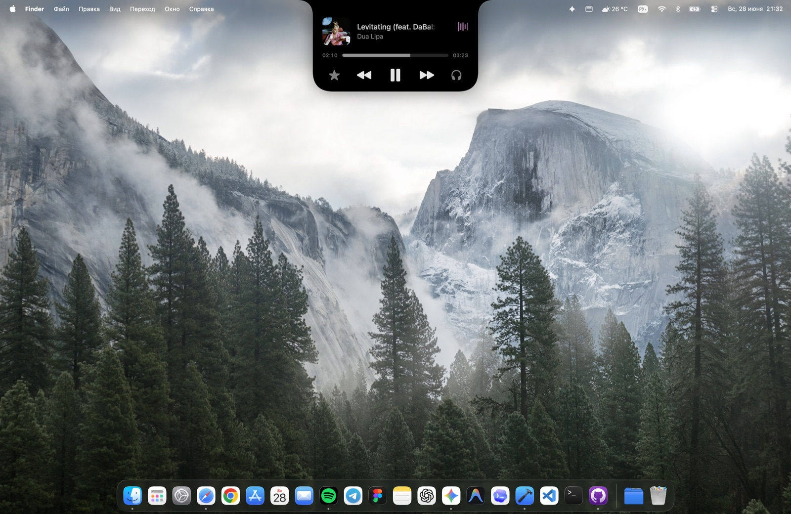
SwiftUI and AppKit, with its own engine that mirrors the spring physics and morphing of the iPhone Dynamic Island.
Now Playing with artwork, visualizer and lyrics; downloads, AirDrop, timers, screen recording, Focus, Personal Hotspot.
Charging, low and full battery, Bluetooth, Wi-Fi, VPN and volume/brightness HUDs.
Media and live activity surfaces that carry through lock and unlock transitions.
Drag, swipe and scroll to dismiss or restore, with adaptive corners and swipe-aware blur.
Jelly-like morphing, squash and stretch, and synchronized content interpolation.
On non-notched Macs and external displays it becomes a floating Dynamic Island capsule.
Notch size, stroke, background, animation presets, display selection and fullscreen handling.
Fully localized interface, activities and settings, switchable instantly.
Media and activities stay visible on the lock screen without stealing focus.
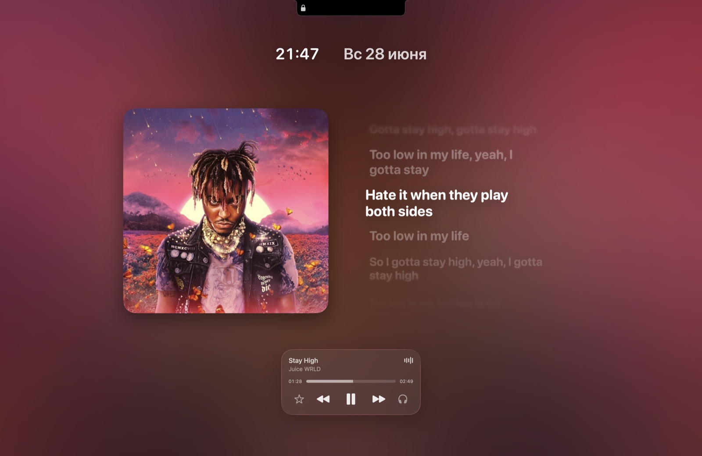
A small selection of the states and alerts Notchhaven supports.
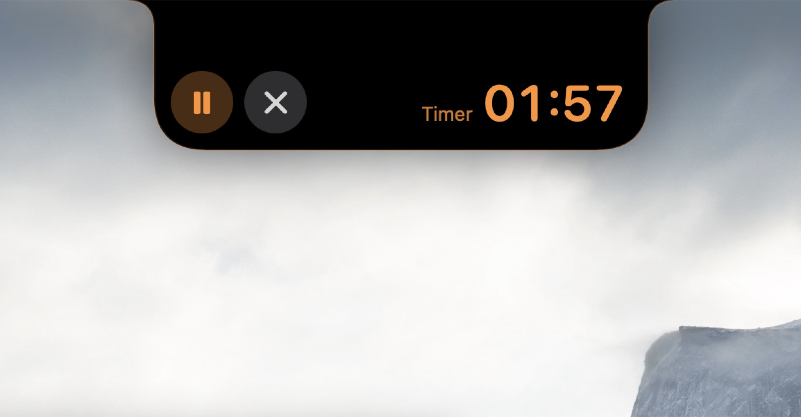
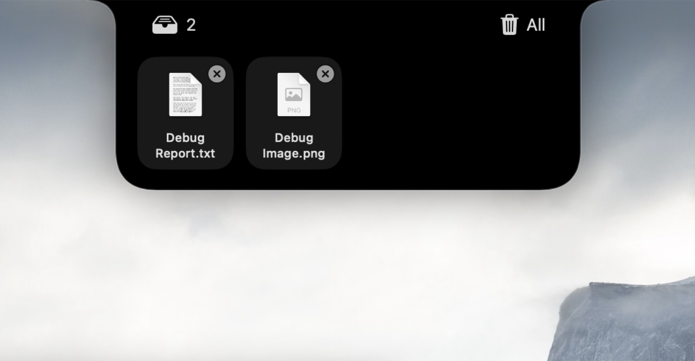
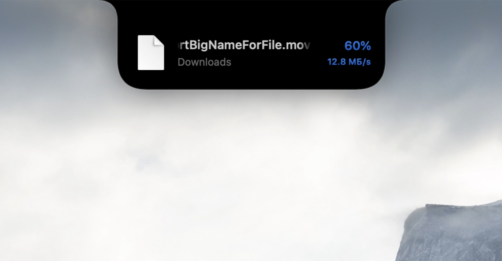
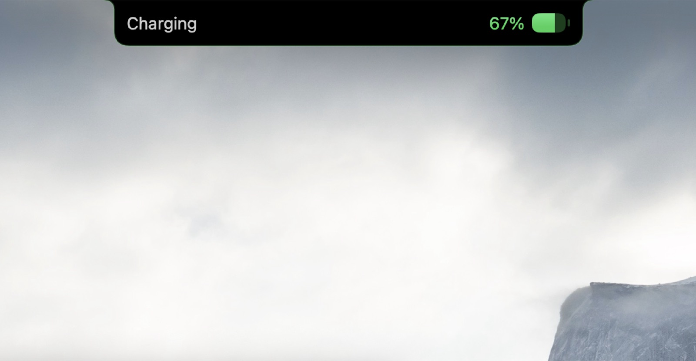
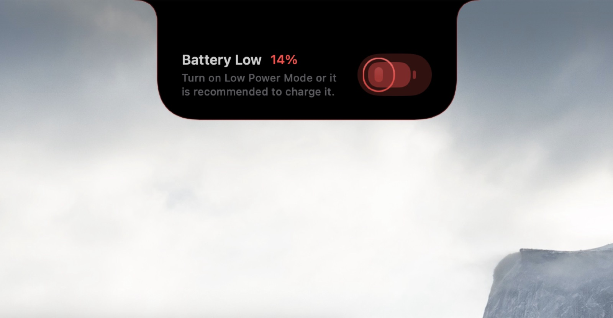
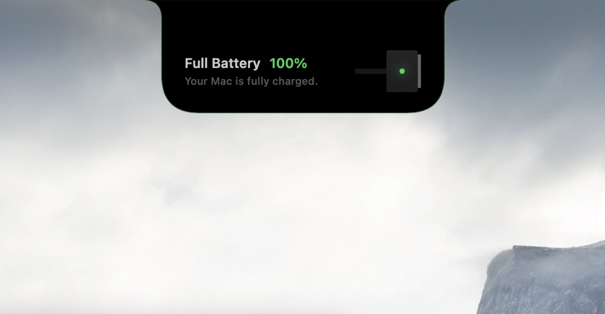
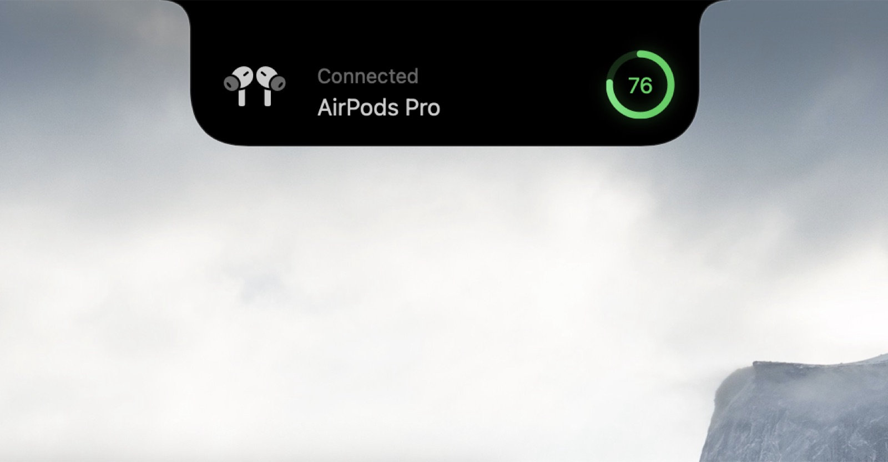
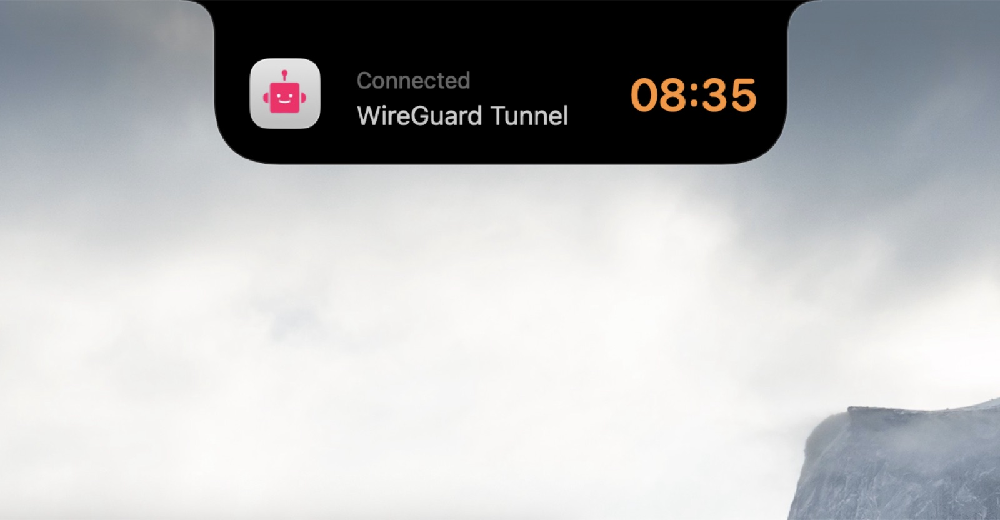
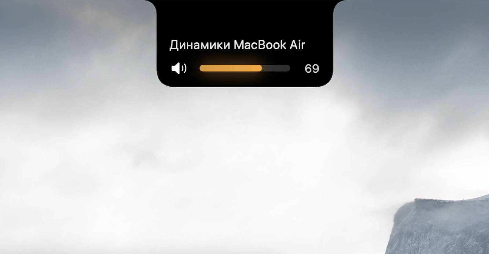
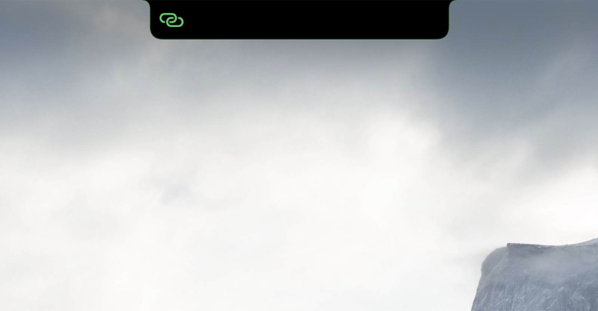
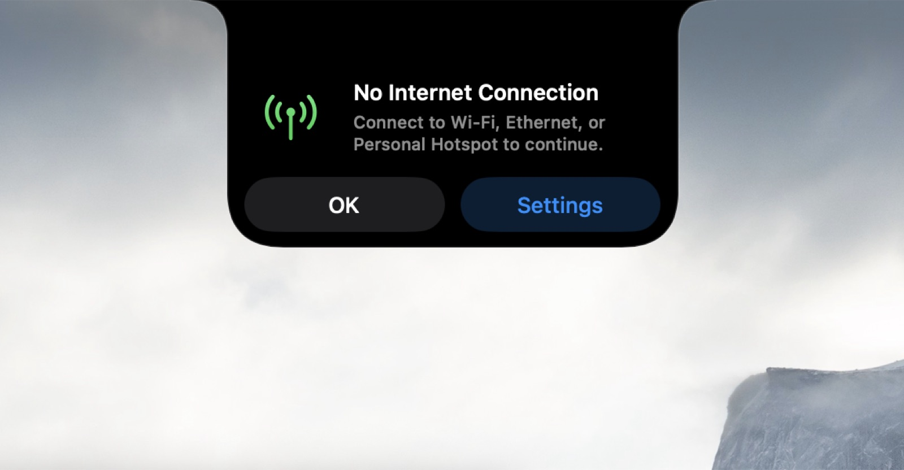
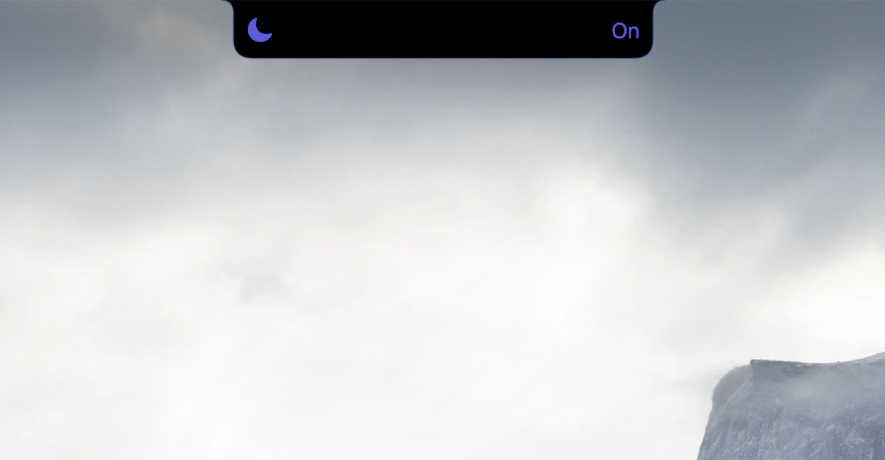
See when Claude Code is thinking, running a tool, waiting on you, or done, with a snippet of its last reply. It's off by default and listens on loopback only (127.0.0.1:26540).
{
"hooks": {
"UserPromptSubmit": [{ "hooks": [{ "type": "command", "command": "/path/to/Notchhaven/scripts/claude-notch-hook.sh" }] }],
"PreToolUse": [ ... same hook ... ],
"Notification": [ ... same hook ... ],
"Stop": [ ... same hook ... ],
"SessionEnd": [ ... same hook ... ]
}
}Turn on Show Claude Activity in the menu bar menu, then add the hooks above to ~/.claude/settings.json.
Requires macOS 14.6 or later. Open source under GPL-3.0.